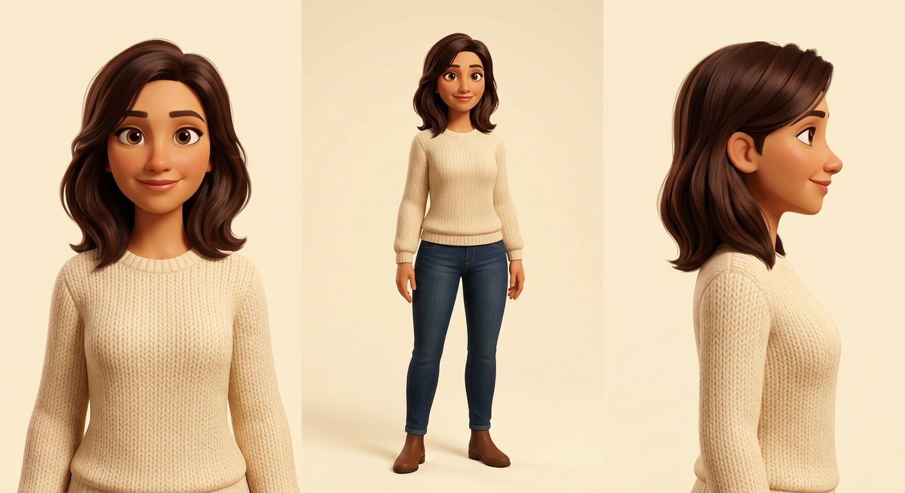
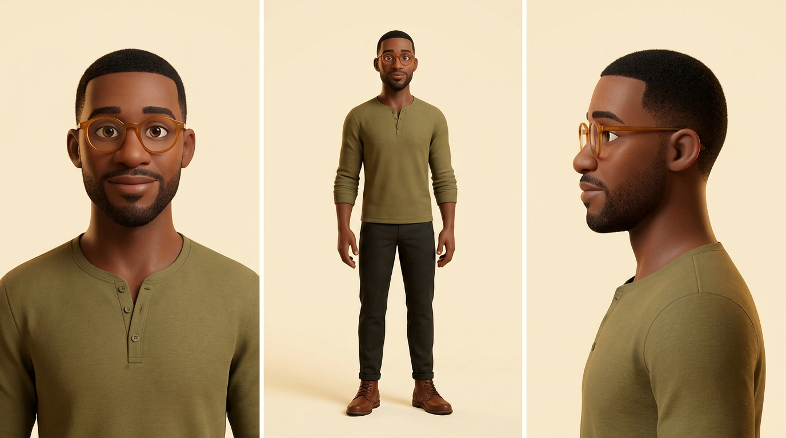
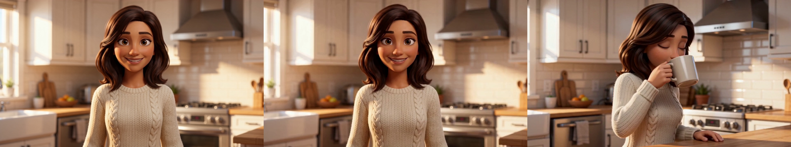
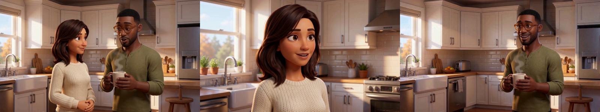
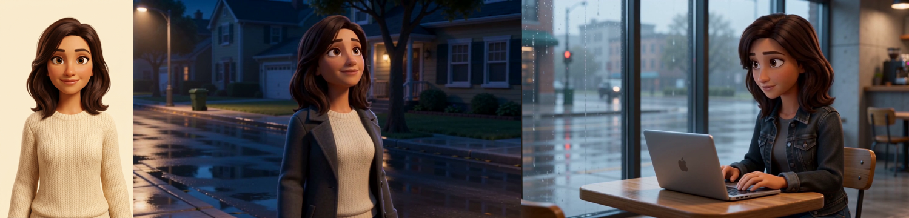
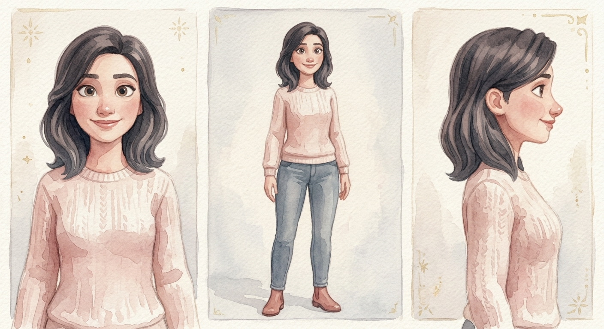
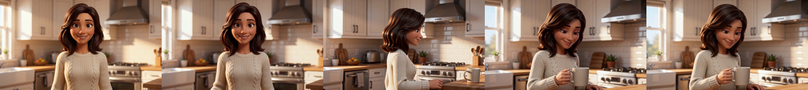
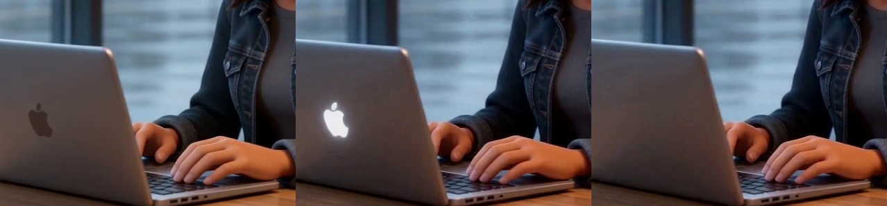

Can ByteDance's Seedance 2.0 carry a narrative film — consistent characters, cut-together coverage, one look across every shot? We tested each capability in isolation, on purpose, with money on the clock. These are the actual takes.


Each sheet is generated as one image with three panels, so the three views can't drift apart — then cropped into numbered reference images the API consumes. The whole cast costs a few cents of image generation before a single video token is spent.
Watch for: the sweater's cable pattern surviving from the casting sheet, and the spoken line — video and audio are generated together in one pass.

Watch for: the first frame — it is the previous clip's last frame. Same person, same kitchen, new action. This is how scenes get longer than one generation.
The risk was identity bleed — two referenced faces averaging into each other. It didn't happen: his glasses and beard, her face and hair, both locked for all eight seconds. Dialogue turn-taking came out in the right order with natural pacing (whisper-verified).

The capability limit we found: a master frame attached as reference anchors the camera axis — take 1's "reverse angle" silently kept the master's side of the room. The fix that became a recipe: say "the camera has crossed to the opposite side" and name what's now behind the subject and what "is NOT visible because it is behind the camera." Take 2 cut correctly.

Films have more than one location. Verdict: three casting refs carry a character into any palette, time of day or wardrobe. (Bonus find: an unprompted Apple logo appeared on her laptop — brands sneak in; see Slate 09 for how it left.)
Pitch analysis puts Nova at ~244 Hz in one generation and ~184 Hz in another — different voices for the same face. Production strategy: native audio for ambience, room tone and one-off lines; a consistent dub (ElevenLabs) for recurring-character dialogue.

Reference images pin render style as strongly as identity — no prompt could watercolor a 3D-cast character. The recipe: repaint the casting sheet (one free image edit), crop a style-variant pack, done. One cast, any number of film looks.

Any two approved frames can now be connected — ends of takes, Blender renders, restyled stills. Combined with chaining (Slate 02), continuity works in both directions.

The negation trap, caught on film: asked to "remove the glowing logo", the model made the logo bigger — and glowing. Naming a thing renders it. The recipe that works: describe the end state — "the lid is completely blank brushed aluminum." Applies to every prompt you'll ever write.
| ID | Test | Verdict | Takes | Tokens | What it established |
|---|---|---|---|---|---|
| — | Casting + screen test + chaining | PASS | 2/2 | 217.8k | R2V identity from 3 refs; last-frame chaining; native audio |
| T1.1 | Two characters, one shot | PASS | 1/1 | 173.7k | zero identity bleed; correct dialogue turn-taking |
| T1.2 | Shot / reverse-shot | PASS·R | 3/2 | 326.7k | masters anchor camera axis → explicit axis-cross language |
| T1.3 | Character survives world change | PASS | 2/2 | 217.8k | identity portable across palette / wardrobe / location |
| T1.4 | Voice consistency | DRIFT | 0 new | 0 | native voices vary per generation → dub recurring dialogue in post |
| T1.5 | Style lock across shots | PASS·R | 3/2 | 326.7k | refs pin style → cast-per-film-style variant packs |
| T3.1 | First+last frame bridge | PASS | 1/1 | 108.9k | pin two frames, generate the connecting action |
| T3.2 | V2V surgical retakes | PASS·R | 2/1 | 433.8k | end-state phrasing (never name the removal); V2V ≈ 2× cost |
| T3.3 | Retake-rate logging | DATA | 12 gens | passive | 75% first-take · 1.33 generations per keeper |
| T2.1 | Sketch → image → video | WAITING | — | ~500k est | needs: a hand sketch |
| T2.2 | Human performance reference | WAITING | — | ~650k est | needs: performance footage (+ green-screen composite route) |
| T2.3 | Blender scene consistency | WAITING | — | ~600k est | needs: Blender open with MCP addon |
| CAP | Capstone: 60–90s dialogue scene | QUEUED | — | ~2M est | integration test — everything above in one cut sequence |